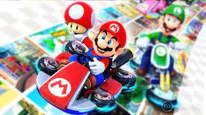
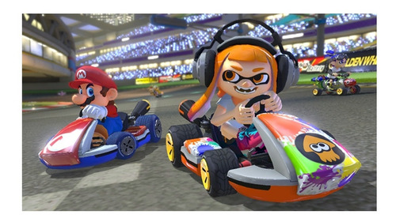
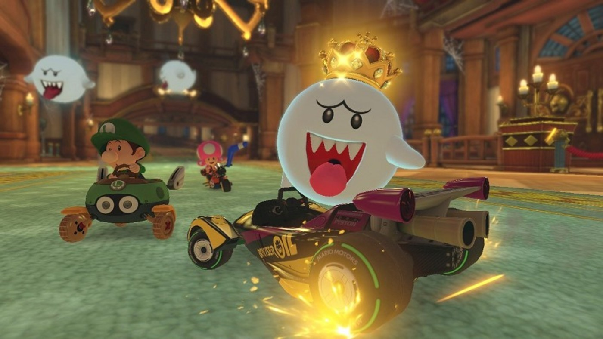

Comprar Mario Kart™ 8 Deluxe
Mario Kart™ 8 Deluxe




Sal a la carretera con la versión definitiva de Mario Kart 8 y juega en cualquier momento y en cualquier lugar. Corre a tus amigos o lucha contra ellos en un modo de batalla revisado para nuevos y regresivos cursos de batalla
Juega localmente en multijugador de hasta 4 jugadores en 1080p mientras juegas en modo TV. Cada pista de la versión Wii U, incluyendo DLC, hace un retorno glorioso
Los jugadores pueden elegir una nueva función de dirección inteligente que hace que conducir y permanecer en la pista sea fácil para jugadores principiantes y niños, incluso a 200 cc